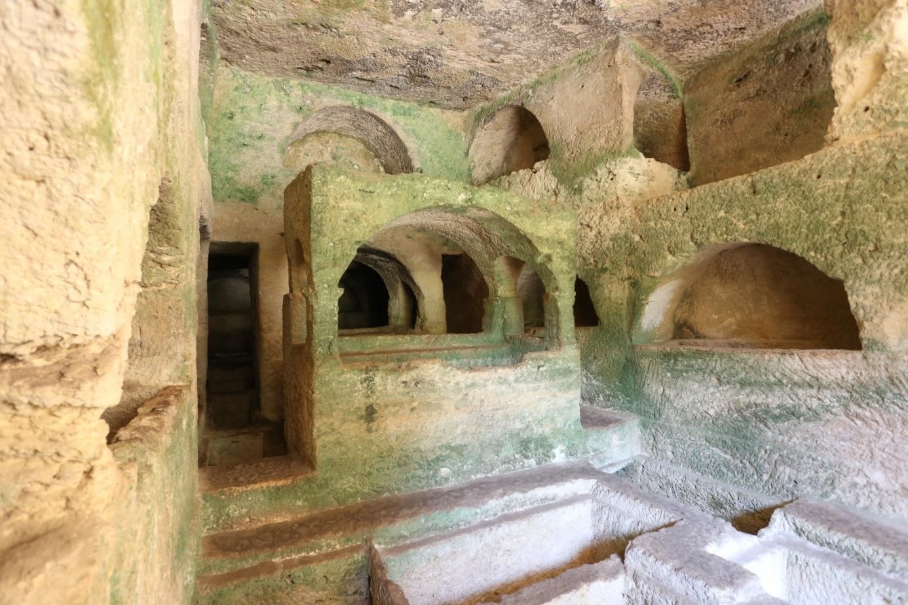

Junior Android Developer
Sosyal Medya Hesaplarım:


Sakarya Universitesi
Bilgisayar Mühendisliği


Hatay Tarihi
M.Ö Hatay
Hatay, Türkiye'nin en eski yerleşim yerlerinden biridir. Araştırmacılar, eldeki bilgilere göre yörenin iskân tarihinin M.Ö. yüzbinli yıllara rastlayan orta paleolitik döneme kadar uzandığını ifade etmekte, bunun 2,5 milyon yıl öncesine kadar uzanabileceğini belirtmektedirler. 1954-1966 yılları arasında Altınözü, Şenköy, Antakya ve Çevlik'te yapılan araştırmalarda elde edilen ve M.Ö. 100000-40000 yılları arasında tarihlenen bulgular orta paleolitik dönem özellikleri taşımaktadır. Yine Yayladağı-Kışlak civarında ve Çevlik-Kanal mağarasında, M.Ö. 40000-11000 yılları arasında tarihlenen üst paleolitik döneme ait araçlar ve insan kalıntılarında Homo Sapiens Çevlikensis'ten kalma kemikler bulunmuştur. Bu mağaralarda insan yaşayışının Milattan sonraki yıllara kadar sürdüğü tahmin edilmektedir. Bölgede Cüdeyde, Hamam Vadisi, Çatalhöyük, Atçana, Tainat gibi höyüklerde değişik zamanlarda yapılan kazı ve araştırmalarda elde edilen buluntulardan (çanak-çömlek, kadın figürleri, ağırşak, boncuk, süs eşyaları, dörtgenplanlı büyük kerpiç ev duvarları -taş temel üzerinde kerpiç duvar-, maden gereçler, orak, bıçaklar, taş mühürler, iğneler, deliciler, baltalar, mızrak uçlar ve Kırıkhan sınırları içinde bulunan dolmenler...gibi) Hatay yöresinin neolitik, kalkolitik dönemlerde ve Tunç Çağında yaygın ve hareketli bir yerleşim yeri olduğu anlaşılmaktadır. Daha sonra yapılan araştırmalar ise, bu çağlar boyunca Amik Gölü´nün bazen daha geniş alanlara yayıldığını, bazan da kuruyup göl sahasının uzun yıllar ova halinde kaldığını, Asi nehrinin zaman zaman yatak değiştirdiğini göstermiştir. Amik Ovası yerleşimlerinde görülen saray mimarisi kalıntıları, Tunç Çağının siyasi yapı ve yaşayışı ile ilgili bazı bilgiler yanında, bu yerleşimlerin beylikler biçiminde örgütlendiğini de ortaya koymuştur. İlk Tunç Çağı sonunda Amik Ovası´ndaki beylikler Mezopotomya'dan gelen Akadların egemenliği altına girmiş, fakat bu egemenlik kısa sürmüştür. Bundan sonraki dönemde kuzeyden gelen kavimlerinde etkisiyle başlayan kargaşa dönemi M.Ö. 1800 yıllarına kadar devam etmiştir. M.Ö. 1800-1600 yılları arasında yöre, merkezi Halpa (Halep) olan Yamhad Krallığı'na bağlı bir beyliğin toprakları içinde yer almıştır. Başkenti Alalah (Atçana) olan bu beylik iç işlerinde bağımsız, dış işlerinde Yamhad Krallığı'na bağlıydı. Bir ara Yamhad Krallığı'nın merkezi Atçana'ya taşınmış ve Kral Hammurabi burada M.Ö. 1780-1750 dönemine tarihlenen ve kalıntıları bu günde görülen surlarla çevrili bir saray yaptırmıştır. Hammuribi'nin yerini Babil Kralı Hammurabi'yle çağdaş olan ve hakimiyeti M.Ö. 1686 yılına kadar Yarim-Lim almıştır.
Yarim-Lim döneminde Orta Anadolu'da ortaya çıkan Hitit krallığı, güçlenip birliği sağladıktan sonra güneye yönelmiş, Amik ovası üzerinden Yamhad krallığının üzerine yürümüştür. M.Ö. 1620 yılında Hitit Kralı Hattuşil ölünce sefer sonuçlanmadı. Onun yerini alan oğlu Murşil, Yamhad Krallığı üzerine yeniden sefer düzenledi, Atçana ve çevresindeki yerleşim yerleri ile Halpa şehrini ele geçirdi, şehri yakıp yıktı. Daha sonra seferine devam ederek Babil'i ele geçirdi, çok sayıda esirle Hattuşaş'a döndü. Antakya ve çevresi Murşil'in ölümüne kadar Hitit egemenliği altında kaldı. Onun ölümünden sonra yöredeki prenslikler Hitit egemenliğine baş kaldırdılar. Prens İlim-İlimma'nın başında bulunduğu Atçana Beyliği ile bütün Suriye şehirleri M.Ö. 1490'larda Mısır egemenliğini kabul ederek Firavun Tutmasis III'e bağlandılar. M.Ö. 15. yüzyıl ortalarında Yamhad Krallığı Hitit egemenliği altına girdi. II. Hattuşil döneminde Yamhad Krallığı ve diğer yöre devletleri bir süre bağımsız kalabildilerse de, I. Şuppiluliuma bu yöreleri tekrar zaptetti. Daha sonra Şuppiluliuma ikinci bir sefer daha düzenleyerek bölgeleki Hitit egemenliğini kesinleştirdi ve bu durum M.Ö. 13. yüzyıla kadar devam etti. 13. yüyılda Kral Tukulti-Ninurta zamanında Asurlular Güneydoğu Anadolu'yu zaptetti. M.Ö. 1200'lü yıllarda Hitit devleti zayıflayınca Güney Anadolu'da Fırat kıyıları ile Konya arasındaki bölgede çok sayıda devletçik ortaya çıktı. Etnik kökenleri, dilleri ve gelenekleri farklı olan bu devletçikler uzun süre siyasi bir birlik kuramadılar. Sadece Amik Ovası ve çevresinde birleşme sağlanabildi ve merkezi Kanula (Kırıkhan yakınlarındaki Çatalhöyük) olan Hattena Krallığı kuruldu. M.Ö. 9. yüzyılda Kral Asur-Nasir-Apli yönetimindeki Asurlular, Kral Lubarna yönetimindeki Hattena ülkesine girip, Kanula'ya kadar geldiler. Daha sonra Kral II. Salmanassar döneminde Hattena ülkesi bütünüyle Asur denetimi altına girdi. Asurluların zayıflayıp prensliklere bölünmesinden sonra geçici bir birlik oluşturmuş olan Hitit prenslikleri bir süre barış ve özgürlük içerisinde yaşadılar. Ancak kısa bir süre sonra bu defa Van yöresinde yaşayan Urartuların egemenliği altına girdiler. M.Ö. 721-705 arasında hüküm süren Asur Kralı II. Sargos döneminde ise bu prenslikler birer Asur Vilayeti haline dönüştürüldü. Prensliklerin Batı Anadolu'daki Friglerden yardım istemesi üzerine Asurlular baskıyı arttırdı, halkın büyük kısmı Asur ülkesine nakledildi. Bir süre sonra Hitit prenslikleri eridi, birer birer ortadan kalktı. Devamı...
Gezilecek Yerler
İSSOS ANTİK KENTİ
Hatay İli'nin, Erzin İlçesi, Gözeneler mevkiinde yer alan İssos (Epiphaneia) Antik Kenti'nde ilk olarak kurtarma kazılarına 2006 yılında başlamış ve çalışmalar 2008, 2010 ve 2011 yıllarında devam etmiştir. Kazı çalışmaları ilk etapta Geç Roma Dönemine ait mozaik kurtarma kazısı olarak planlanmıştır fakat daha sonra genişletilerek Geç Roma dönemine ait hamam kazısını da içermiştir. Geç Roma Dönemine ait hamamın ısı bölümleri, havuz, su sistemleri, dükkânlar ve Artemis'e ait mozaikler ortaya çıkartılmıştır. 2011 yılında yapılan çalışmalarda ise hamamın batısında Abbasi Dönemine ait yapıların temelleri çıkarılmaya başlanmıştır. Geç Roma Dönemine ait hamam ve Abbasi Dönemine ait mimari kalıntılar, antik şehrin güneydoğusunda kalmaktadır.
Saint Pierre Kilisesi
.jpg) Antakya- Reyhanlı yolu üzerinde kente iki kilometre uzaklıkta Habib-i Neccar Dağı yakınında yer almaktadır. Doğal
bir mağara olup eklemelerle kiliseye dönüştürülmüştür. Kesin inşa tarihi bilinmemekle birlikte; İsa’nın on iki
havarisinden biri olan Aziz Petrus’un ilk vaaz verdiği yer olduğuna ve mağarada cemaatin ilk kez ‘Hıristiyan’
adını aldığına inanılmaktadır. Bu nedenle St. Pierre Kilisesi Hıristiyanlığın ilk kilisesi olarak bilinir.
Mağara, Hıristiyanlığın Roma Devleti tarafından resmi din olarak kabil edilmesinden sonra yapılan eklemeler ile
gotik tarzda bir kilise şeklini almıştır. Aziz Petrus’un ilk Papa olarak kabul edilmesiyle Katolik inancının
dünyaya yayılmasında bir merkez konumunu almıştır.
Mağaranın tabanında tahrip olmuş bir şekilde M.S. 4 ve 5’inci yüzyıllara ait mozaik kalıntısı vardır. Ayrıca bir
altar, niş içinde mermer küçük St. Pierre’nin heykeli, kutsal sayılan su, saldırı esnasında cemaatin gizlice
kaçmasına yarayan tünel bulunmaktadır. 1983 yılında Papa VI.Paul tarafından Hıristiyanlar için Haç yeri ilan
edilmiştir. Her yıl 29 Haziran’da Katolik Kilisesince burada bir ayin düzenlenir.
Saint Pierre Kilisesi Ziyaret Saatleri Yaz Dönemi: 08:30- 18:30 (1 Nisan-1 Ekim)
Saint Pierre Kilisesi Ziyaret Saatleri Kış Dönemi: 08:30-16:30 (2 Ekim-14 Nisan)
Saint Pierre Kilisesi Tatil Günleri: Haftanın her günü ziyarete açıktır.
Antakya- Reyhanlı yolu üzerinde kente iki kilometre uzaklıkta Habib-i Neccar Dağı yakınında yer almaktadır. Doğal
bir mağara olup eklemelerle kiliseye dönüştürülmüştür. Kesin inşa tarihi bilinmemekle birlikte; İsa’nın on iki
havarisinden biri olan Aziz Petrus’un ilk vaaz verdiği yer olduğuna ve mağarada cemaatin ilk kez ‘Hıristiyan’
adını aldığına inanılmaktadır. Bu nedenle St. Pierre Kilisesi Hıristiyanlığın ilk kilisesi olarak bilinir.
Mağara, Hıristiyanlığın Roma Devleti tarafından resmi din olarak kabil edilmesinden sonra yapılan eklemeler ile
gotik tarzda bir kilise şeklini almıştır. Aziz Petrus’un ilk Papa olarak kabul edilmesiyle Katolik inancının
dünyaya yayılmasında bir merkez konumunu almıştır.
Mağaranın tabanında tahrip olmuş bir şekilde M.S. 4 ve 5’inci yüzyıllara ait mozaik kalıntısı vardır. Ayrıca bir
altar, niş içinde mermer küçük St. Pierre’nin heykeli, kutsal sayılan su, saldırı esnasında cemaatin gizlice
kaçmasına yarayan tünel bulunmaktadır. 1983 yılında Papa VI.Paul tarafından Hıristiyanlar için Haç yeri ilan
edilmiştir. Her yıl 29 Haziran’da Katolik Kilisesince burada bir ayin düzenlenir.
Saint Pierre Kilisesi Ziyaret Saatleri Yaz Dönemi: 08:30- 18:30 (1 Nisan-1 Ekim)
Saint Pierre Kilisesi Ziyaret Saatleri Kış Dönemi: 08:30-16:30 (2 Ekim-14 Nisan)
Saint Pierre Kilisesi Tatil Günleri: Haftanın her günü ziyarete açıktır.Titus Tüneli

Titus Tüneli, Titus Kaya Tüneli veya Vespasianus Tüneli, günümüzde Türkiye'nin Hatay iline bağlı Samandağ ilçesi sınırları içerisinde, üzerinde Çevlik köyü kurulu olan ilçenin 5 km. kuzeyinde kalan dağlık ve denize hâkim yamaçlarda bulunan Titus adıyla bilinen Titus Flavius Vespasianus tarafından yaptırılmış, yapımı yüzyılı aşkın bir zaman sürdüğü düşünülen tünellerdir.
Beşik Mezarları

4 sütunlu 3 girişli cephenin doğu odasından görünümü. Samandağ Çevlik köyünde deniz kenarında 300 hektarlık alana yayılan “Seleukeia Pieria” ya da bir diğer söylenişle “Pieria’daki Seleukeia” antik kentinin en önemli kalıntılarından birisi olan Beşikli Mağara tamamen kayaya oyulmuş mezar kompleksidir. Yöre halkı tarafından mezar adasının içinde yan yana aynı boyutlarda işlenerek biçimlendirilmiş üzeri düz çatılı iki taş sandukalı mezardan ötürü Beşikli Mağara olarak adlandırılmıştır. 18. ve 19. yüzyıl seyyahlarınca seyahat kitaplarında Krallar Mezarı olarak tanımlanmış, W.Bartlett tarafından gravürleri çizilmiştir.alt Mezar adasının bulunduğu alan, eski çağda ölüler şehri olarak adlandırılan bir nekropol alanı olarak düzenlenmiş, mezar adasının bulunduğu kayalık yamacın kuzey, doğu ve güney yanında kayalık içine işlenmiş mezar odaları çevrelenmiştir.alt Mezar alanına giriş batı yanda bulunan merdivenlerle sağlanmıştır. Bu merdivenlerin bir kısmı halen görülebilmektedir. Beşikli mağarada 1938 yılında Amerikan – Fransız kazı heyeti tarafından kazı temizlik çalışması yapılmış ve mezar anıtının çok eski çağlarda soyulduğu ve tahrip edildiği anlaşılmıştır. 1998 yılında ve 2002 yılından bu yana Yrd. Doç. Dr. Hatice Pamir başkanlığından yürütülen arkeolojik çalışmalar sonucunda anıtın ayrıntılı belgeleme çalışması yapılmış ve Samandağ Kaymakamlığı’nın destekleri ile alanın çevre düzenlemesi gerçekleşti ri Imiştir. Beşikli Mağara olarak adlandırılan anıt mezar, birbirine bağlantılı dört mekandan, tabana ve yan duvarlara oyulan toplam 93 mezar yatağından oluşmaktadır. Önde yer alan giriş mekanının cephesinde 4 sütunlu ve üç girişli cephe düzenlemesi yer almaktadır. Ön giriş mekanı küçük dikdörtgen planlıdır ve iki ana mekanı açılmaktadır. Mekanın tavanı üç bölümlü olarak tasarlanmış, her bir bölümün köşeleri kabartma istiridye, yan kenarlarda ise kabartma sarmaşık dalı motifi ile süslenmiştir. Ön giriş mekanının tabanında ve batı yan duvarında mezar yatakları açılmış, mezar yataklarının üst kısmı kapatma plakaları ile kaplanmış olduğu anlaşılmaktadır.
Harbiye Şelaleleri
Defnenin antik ismi olan Daphne, Zeus’un oğlu Apollon ile karşılaşır. Apollon’un aşık olması üzerine Daphne, toprak anadan kendisini saklamasını ister ve Daphne kök salarak bir defne ağacına dönüşür. Bugün enerjisinden ödün vermeyen şelalelerin, Defne’nin gözyaşları olduğuna inanılır.